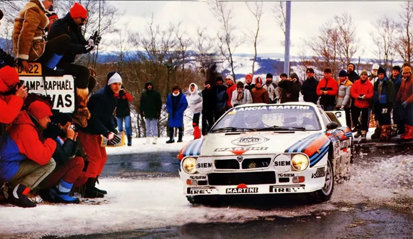
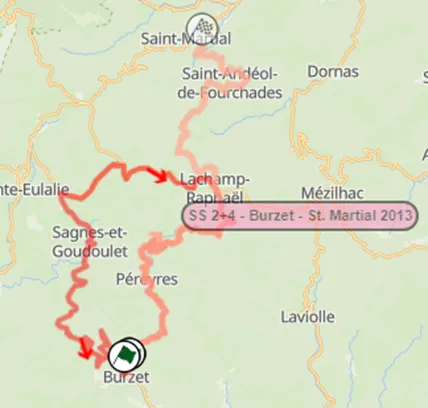
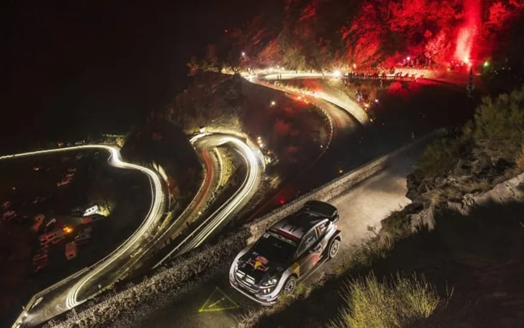
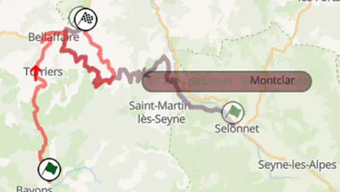
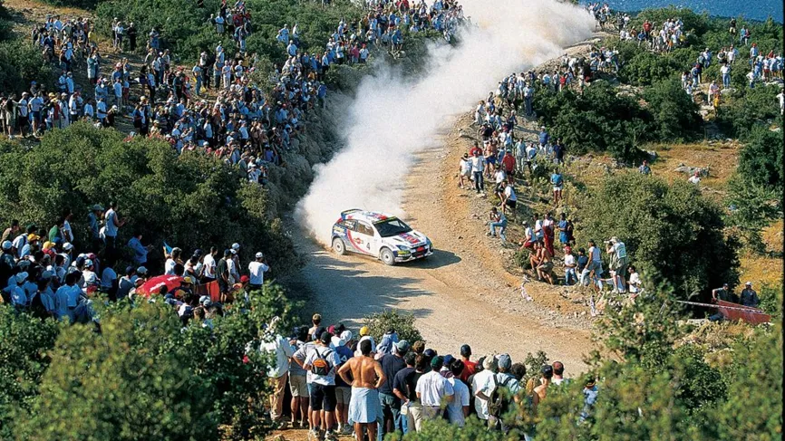
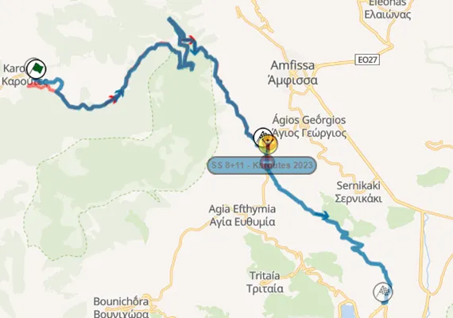
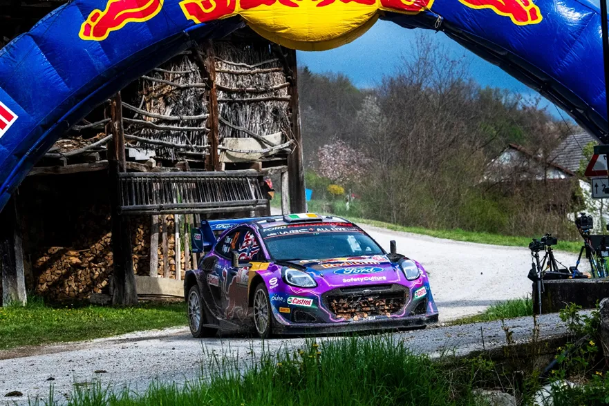
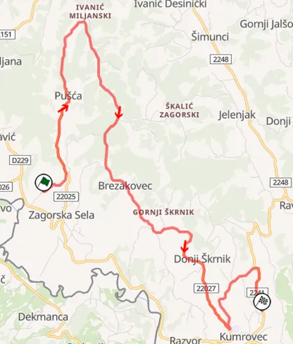
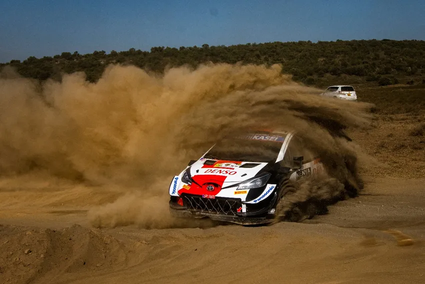
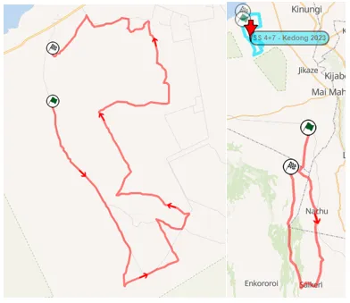

Top 30 Stages in WRC History: 26-30
The poll is closed, and the results are ready to be announced!
We asked you for your favorite WRC stages and you had your say. Each voter selected 15 stages out of a pool of 100, and the 30 stages that had the most votes, combined with our experts’ ratings made it to our list. This was a collaboration between us and Antti from itgetsfasternow.com, this list wouldn’t have been possible without him, so please go check his blog. He will have his own unique post based on this list when all the stages are revealed.
Throughout this month we’ll be going through the results, starting with 30-26:
30 – Burzet – Rally Monte Carlo

Burzet first made an appearance in the WRC in 1973, running as a mammoth 50km stage. In fact, Burzet is a stage that was mostly ran at an average length of 45km, going from the village of Burzet near Vallances, up the mountain where more than often the drivers encountered full snow conditions and then all the way back down again, with the finish line very close to the start line, again in Burzet.
Onboard of the stage used in 1991
Famous moments include Sebastien Loeb going 34 seconds faster than everyone in 2013, Sebastien Ogier finishing 3rd in Burzet in 2012, ahead of Loeb, in a Fabia S2000, Francois Delecour going faster than everyone on slicks in 1991, Walter Rorhl getting a puncture in 1986 and the “Apocalypse Snow” of 1973, where out of the 270 starters, 140 were blocked at the start by the massive snowfall in Burzet, with the Alpine A110s managing to survive to the end.

The most common layout of Burzet along with the one used in 2013, the last time the stage featured in the WRC
29 – Bayons Bréziers – Rally Monte Carlo

Staying in the south of France, in 29th is Bayons- Bréziers. Parts of this stage have been used as early as 1980, with the current version of this stage, which is set to be SS2 of next year’s opener, first appearing in 2017. Usually ran in the dark, Bayons-Bréziers is a very demanding stage, climbing up to 1200 meters near the village of Turriers, with snow and ice often making an appearance.
Parts of the stage can be seen on this onboard
Famous moments include, Bayons-Bréziers being the first full stage of the 2017 regulations, Neuville breaking his suspension from the lead on the 2nd pass in 2017 and the M-Sport Fords suffering mechanical problems due to the leaves on the road, while Neuville took the right tyres and won by 25s over everyone in 2020.

The current layout of Bayons-Bréziers, along with its “cousin” Selonnet-Bréziers, that was the stage used in the early 2000s
28 – Karoutes – Acropolis Rally

Up in the Parnassos Mountain is a little village called Karoutes. A village that every Greek rally fan has a special place in their hearts for. Karoutes is one of the most famous stages from Rally Acropolis, and one of my personal favorites. In the most common route of the stage, the drivers start from the village of Karoutes, and after a technical bit (which is by no means slow), they head downhill until they meet the motorway. Karoutes is a very rough, yet quite fast stage. This year to celebrate the 70th Anniversary of the Acropolis, the organisers combined Karoutes and Bauxites, with the stage running as a big 28.5km stage, ending where Bauxites starts, near the town of Itea (the reverse of this was used back in 1998 and 99). The downhill ending of the 2023 stage was one of my favorites from the 2023 season.
Onboard of the Karoutes stage used in 2023
Famous moments include Katsuta getting two punctures and Lappi breaking his transmission in 2023, Freddy Loix retiring from 4th in Acropolis 2002, Burns and McRae fighting for the lead in 1998 and 1999, and Timo Salonen going 10s faster than Stig Blomqvist en route to his first and only Acropolis win.

The classic Karoutes route compared to the 2023 version that was used in Acropolis this year.
27 – Zagorska Sela - Kumrovec – Rally Croatia

Rally Croatia is a relatively new addition to the WRC calendar, with the first one in the championship calendar being in 2021. Despite that, nearly all 3 of them have been modern classics, with the 2022 and 2021 versions being decided in the power stage of the rally. And the power stage is the one that made the list at number 27. Zagorska Sela – Kumrovec has been the power stage of Rally Croatia in all the years the tarmac rally has hosted a WRC round, and it’s also my personal favorite from the rally. The ending especially is amazing, with very narrow roads and tight turns that require precision.
Onboard of the stage
Famous moments include the final stage showdown between Kalle and Tanak in 2022, with the Finn coming out on top and Neuville having an off but still finishing 3rd, and the battle between Evans and Ogier in 2021, with the Welshman losing the win on the final corner.

The layout of the stage that has been used in every Rally Croatia so far.
26 – Kedong – Rally Safari

Kedong has only featured since the Safari returned in the WRC, but enough times to make the list. Another stage was named Kedong in 2002, but it shares no roads with the ones used since 2021. Kedong is known for its very sandy and tricky fesh-fesh section, as well as it being the fastest stage of the rally in the past years. There are a lot of straights and 900 turns, as well as many surface changes, with the road going from smooth and fast gravel to rough, sandy and technical.
Onboard of the 2021 version of Kedong
Famous moments include Elfyn Evans and Dani Sordo going off on this stage in 2021 and Thierry Neuville beating everyone by 11s despite a puncture in 2021 again.

The 2021 version of Kedong, compared to the one used in 2002.
Written by Dimitris Theodorou in collaboration with Antti from itgetsfasternow.com
All pics are from the Red Bull Content Pool


Comments